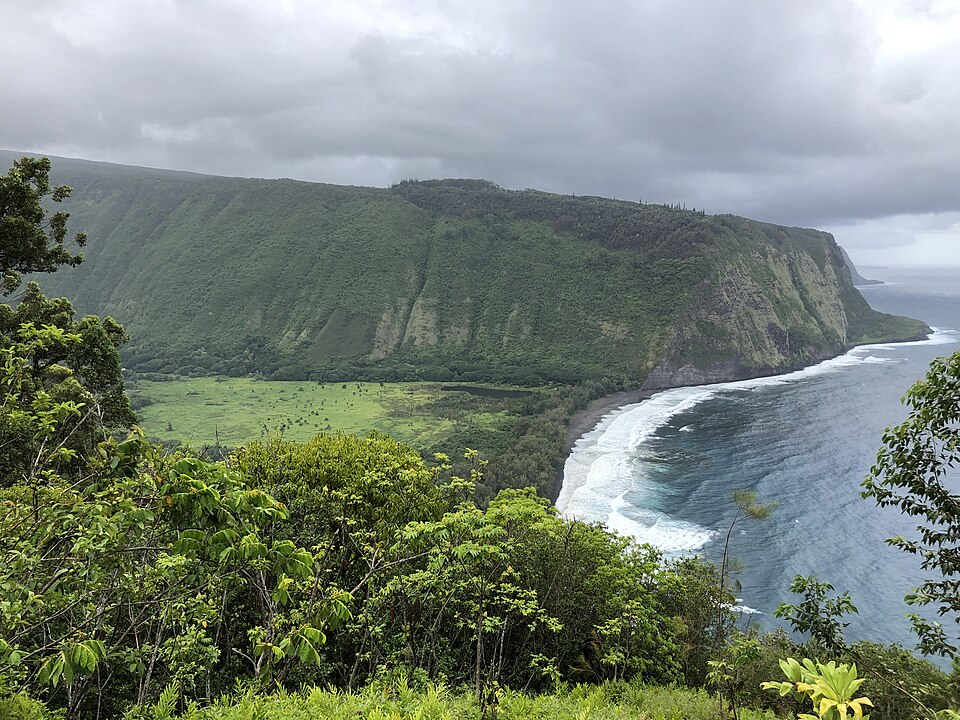

Waipiʻo Valley
Place: Waipiʻo Valley, Hawaiʻi Island
Type: Valley / cultural landscape
Story it tells: A deeply carved valley associated with Hawaiian aliʻi, taro cultivation, sacred traditions, and one of the most dramatic landscapes in Hawaiʻi.

Waipiʻo Valley is a deep valley on the Hāmākua coast of Hawaiʻi Island long associated with Hawaiian chiefly power, taro cultivation, and sacred traditions. The name is commonly translated as “curved water,” likely referring to the bending river and shoreline within the valley. Surrounded by cliffs rising nearly 2,000 feet high, Waipiʻo remains one of the most geographically dramatic and culturally significant landscapes in Hawaiʻi.
For centuries, Waipiʻo served as a political and cultural center for early aliʻi. Oral traditions describe the valley as a place of abundance where extensive loʻi kalo systems once supported a large population. The valley was also home with sacred chiefly sites, including Pakaʻalana, a royal center connected to Hawaiian rulers and religious traditions. Hawaiian traditions further connected Waipiʻo to Lua-o-Milu, a legendary entrance to the underworld said to exist somewhere within the valley.
Waipiʻo’s isolation and steep terrain also made it strategically important. In the 18th century, Maui chief Kahekili invaded the valley during conflicts between Maui and Hawaiʻi Island rulers. Over time, tsunamis and flooding repeatedly disrupted life in Waipiʻo, including major events in 1946 and 1960 that destroyed homes, churches, schools, and farmland. After the devastating 1946 tsunami, many residents relocated to nearby Kukuihaele, leaving the valley far less populated than in earlier generations.
Today, Waipiʻo Valley remains home to a small number of residents, including taro farmers and families with long-standing ties to the valley. Its waterfalls, black sand beach, steep cliffs, and cultural history continue to make it one of Hawaiʻi’s most recognizable landscapes, though access to the valley floor is now carefully managed following concerns over safety, preservation, and Native Hawaiian cultural practices. Debates surrounding access and stewardship continue to reflect Waipiʻo’s ongoing importance in modern Hawaiʻi.